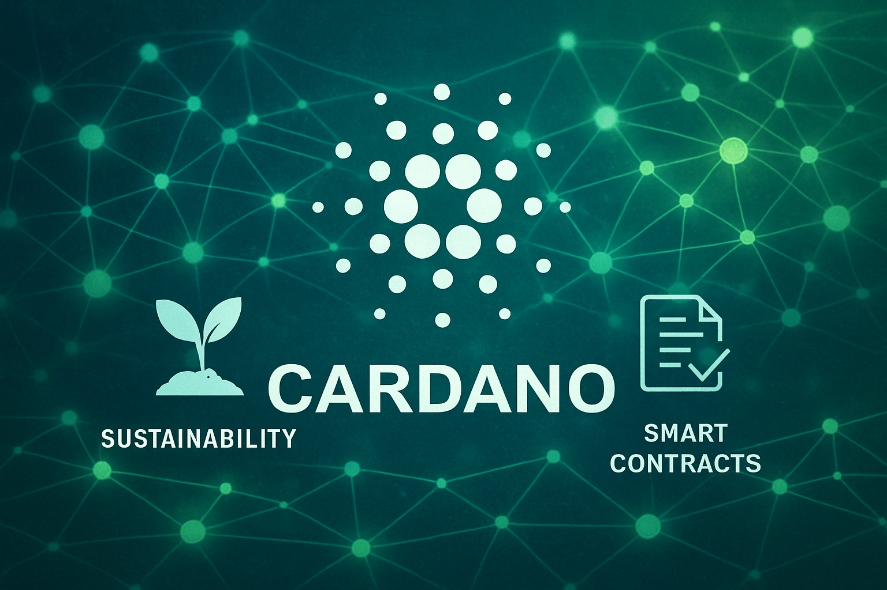
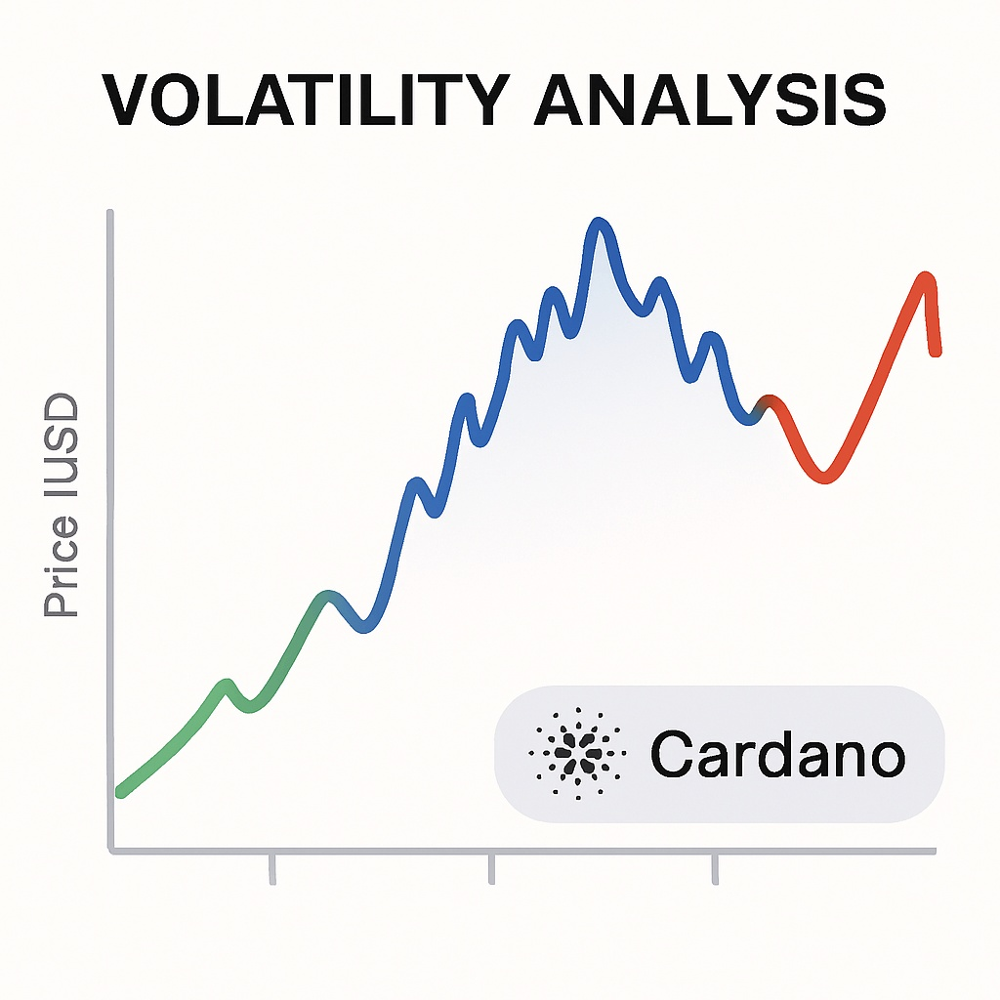

Cardano Price Forecast for End of 2025: Comprehensive Analysis and Insights
The material in this article is intended solely for educational purposes and should not be taken as financial advice. Cryptocurrency investments carry high risk.
Introduction
As of August 20, 2025, 01:10 AM EEST, Cardano (ADA) trades at roughly $0.45, standing out as a major layer-1 blockchain recognized for its research-based development and focus on scalability, sustainability, and smart contracts. Founded by Charles Hoskinson, Cardano powers decentralized apps (dApps), DeFi platforms, and NFTs through its proof-of-stake (PoS) consensus, Ouroboros. With its emphasis on peer-reviewed upgrades and interoperability, Cardano has become a central player in the blockchain arena. This article presents a detailed outlook for ADA’s price prospects by the end of 2025, examining bullish and bearish possibilities, major growth drivers, and potential risks from both market and ecosystem perspectives.
Current Situation
As of August 20, 2025, Cardano’s value sits around $0.45, marking a 28% rise since June 2025 when it traded at $0.35. Over the last month, ADA has performed steadily, closing green on 57% of days and showing volatility of 5.2%. The Fear and Greed Index at 69 reflects strong market optimism, fueled by growth in Cardano’s DeFi space, fresh dApp launches, and new partnerships. Compared to August 2024, ADA rose from $0.28 to $0.45, up 61%. Since 2020, when its price was $0.10, ADA has appreciated by 350%, thanks to its scalable framework and increasing real-world use cases.
Price Predictions for End of 2025
Outlooks for Cardano in December 2025 differ depending on overall market conditions. In a bearish case, ADA could retreat to $0.30 if a 30–40% market correction strikes early in 2025. More neutral forecasts suggest ADA may stabilize between $0.50 and $0.65, supported by dApp and DeFi adoption. Optimistic scenarios expect ADA to climb to $0.80–$1.00, especially if a rally unfolds between February and April 2025. Some analysts foresee ADA reaching around $0.75 by October 2025 if ecosystem growth and partnerships maintain momentum.
Key Factors Driving Growth
- DeFi & dApp Expansion: Cardano’s expanding ecosystem of decentralized applications and DeFi solutions fuels adoption and utility.
- Scalability Upgrades: Enhancements like Hydra improve transaction throughput, making Cardano more competitive.
- Strategic Alliances: Partnerships with governments and enterprises, particularly in developing regions, expand Cardano’s practical applications.
- Market Upswing: A projected market-wide rally in early 2025 could boost ADA’s price performance.
- Sustainability Edge: Cardano’s energy-friendly PoS model appeals to eco-conscious developers and investors.
Risks and Challenges
- Market Volatility: A 30–40% market correction in early 2025 could reduce ADA’s value and weaken investor confidence.
- Regulatory Barriers: Stricter global regulations may hinder Cardano’s growth and usage.
- Rival Competition: Layer-1 projects such as Ethereum and Solana could capture market share, challenging Cardano’s position.
Volatility Analysis
Between July and August 2025, Cardano advanced from $0.35 to $0.45, representing a 28% gain with 5.2% volatility, showing more stability than in past cycles. Yearly growth of 61% emphasizes ADA’s strong trajectory. Technical indicators like the 50-day and 200-day EMAs display bullish momentum, suggesting continued upward potential. If a recovery occurs from February to April 2025, ADA’s DeFi and dApp ecosystem expansion could accelerate gains. Cardano’s research-led upgrades and scalable framework make it well-positioned for sustained adoption and long-term value.
Conclusion
By the end of 2025, Cardano is forecasted to trade within $0.50 to $0.80, with upside potential toward $1.00 under bullish conditions fueled by DeFi growth, scalability improvements, and partnerships. Still, investors must be aware of risks including volatility, regulation, and competitive pressure. Careful research and prudent risk management are essential before investing in ADA.